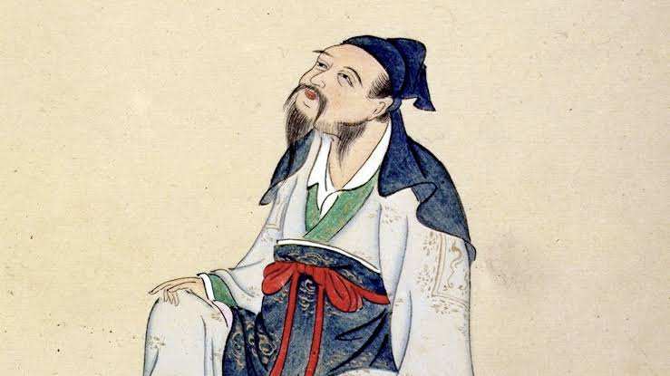

长安元年（701年），李白出生于蜀郡绵州昌隆县。李白先世曾迁居碎叶（今吉尔吉斯斯坦托克马克市），后其父逃归于蜀，定居绵州昌隆县青莲乡，李白即出生于此。
开元六年（718年），李白十八岁。隐居戴天大匡山（在今四川省江油市内）读书。往来于旁郡，先后出游江油、剑阁、梓州（州治在今四川省境内）等地，增长了不少阅历与见识。
李白的乐府、歌行及绝句成就为最高。其歌行，完全打破诗歌创作的一切固有格式，空无依傍，笔法多端，达到了任随性之而变幻莫测、摇曳多姿的神奇境界。李白的绝句自然明快，飘逸潇洒，能以简洁明快的语言表达出无尽的情思。在盛唐诗人中，王维、孟浩然长于五绝，王昌龄等七绝写得很好，兼长五绝与七绝而且同臻极境的。只有李白一人。